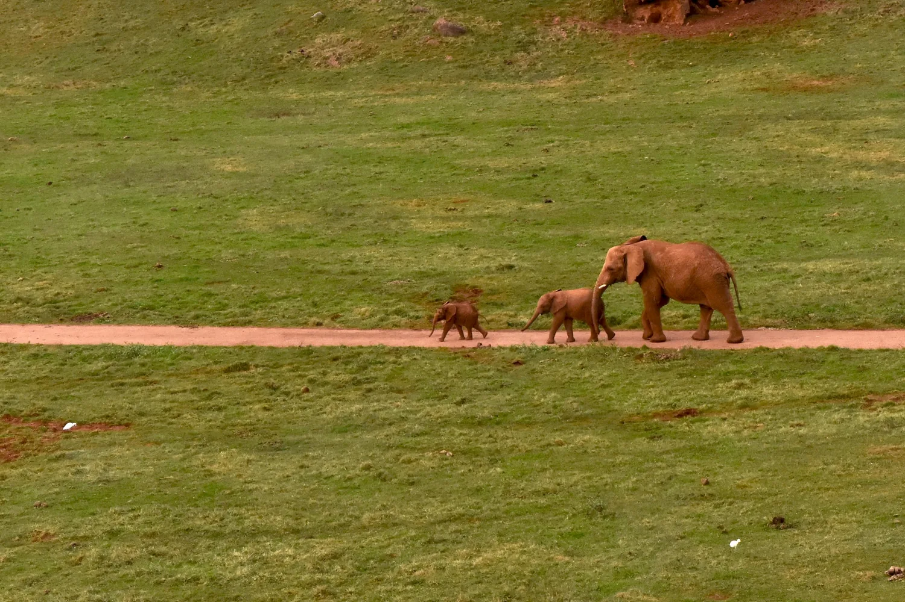

Parque de la Naturaleza de Cabárceno
El Parque de la Naturaleza de Cabárceno reúne a más de 100 especies de animales en semilibertad, repartidas por un antiguo paisaje minero de casi 750 hectáreas que se recorre en coche o en teleférico. Elefantes, leones, osos y rinocerontes conviven en grandes recintos abiertos, con zonas específicas donde los niños pueden acercarse a otras especies. Uno de los planes familiares más completos de Cantabria, con espectáculos y área infantil incluidos.
39690 Obregón, Penagos (Cantabria) Visitar web oficial